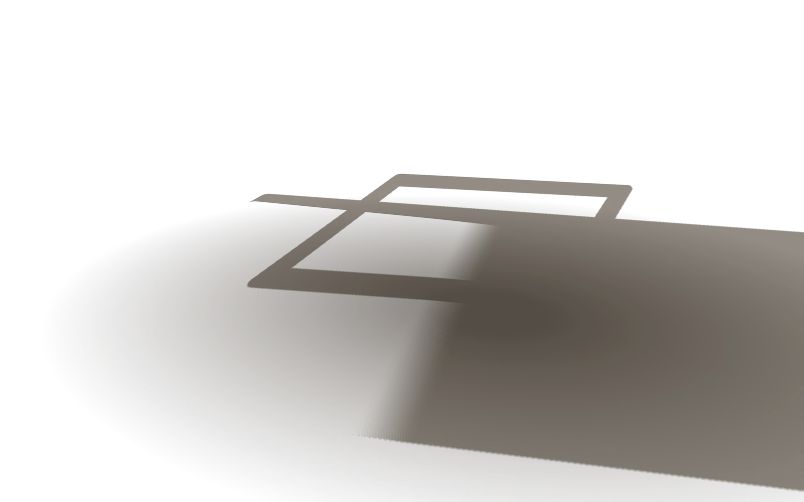
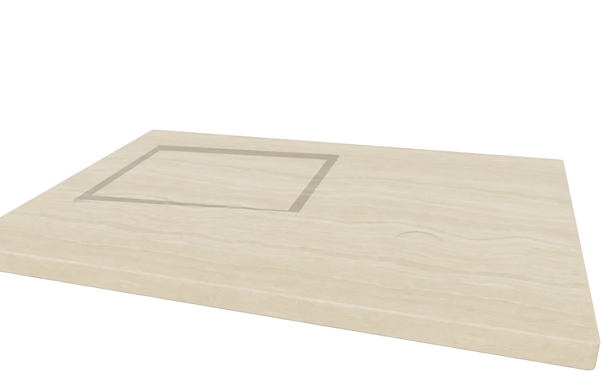
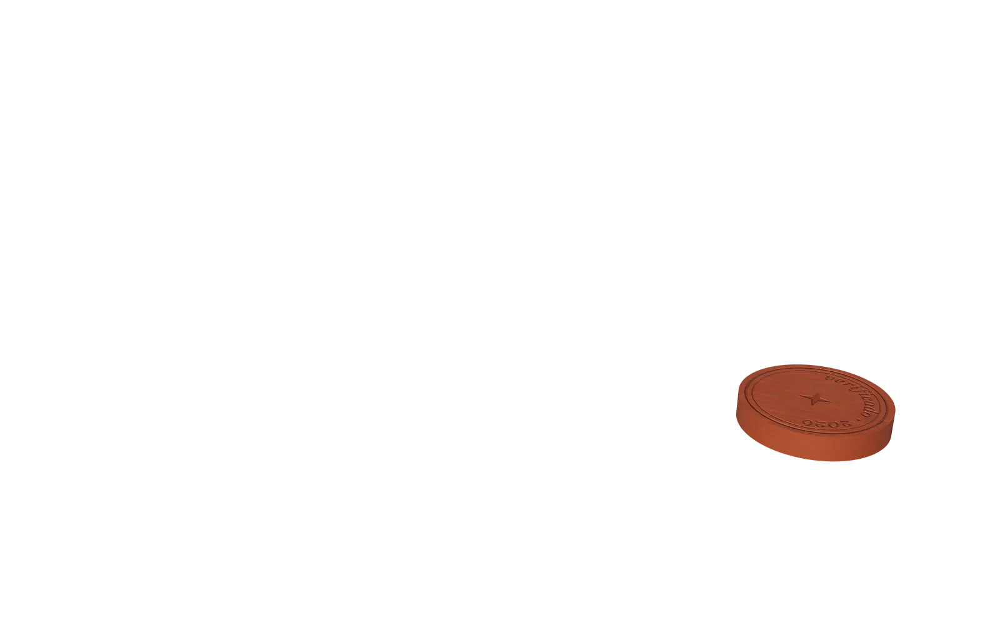
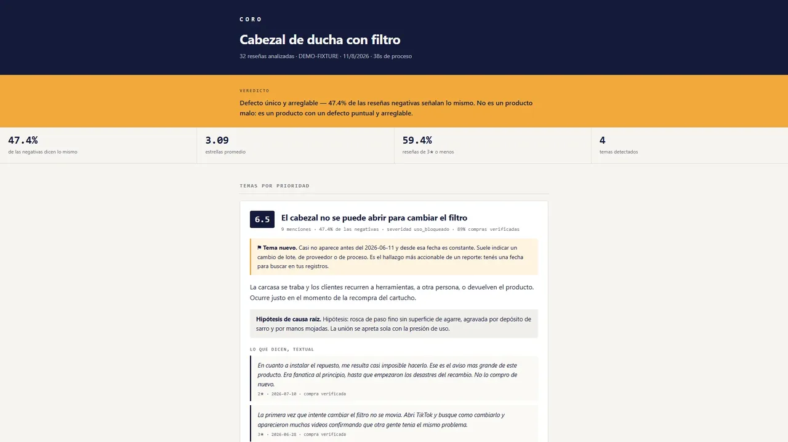
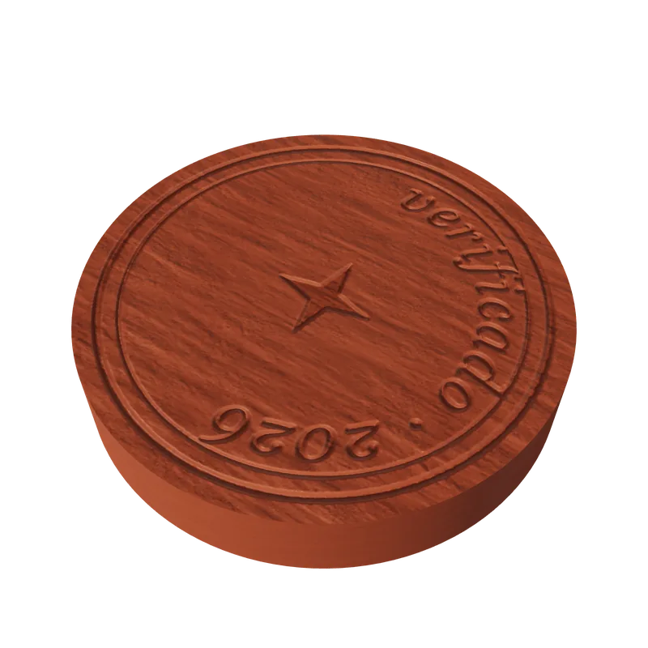

Cathedra
App de estudio para Windows: transcribe clases, arma el plan, genera exámenes y fichas, y cada respuesta cita clase y minuto.
Producto propio · en beta
Leer el caso →
AI Product Builder · remoto desde Buenos Aires
Estudiante de IA y Ciencia de Datos (UADE). Cuatro productos propios: una app en beta, una en uso diario, una demo y un prototipo.





Cada uno con sus decisiones, lo que verifiqué y lo que falta.
App de estudio para Windows: transcribe clases, arma el plan, genera exámenes y fichas, y cada respuesta cita clase y minuto.

App web para iPhone que arma tu rutina con tu equipo y tu tiempo reales, sobre un cuerpo 3D.

Asistente de IA para el staff de un equipo: se pregunta por chat y responde con los datos del plantel.

Lee miles de reseñas de un producto, agrupa el defecto que se repite y encuentra qué competidor ya lo resolvió.
Cada etiqueta lleva al caso. «Interno» es trabajo propio que no publico; «cliente», un trabajo para un tercero que no nombro.
Hechas con el mismo método que mis productos. Ámbar Muebles es una marca ficticia creada para estas demos, y el club de la sala de bots también. Las cifras de terceros van con su fuente; la de los bots es una medición mía.

Demo 01 · e-commerce

Demo 02 · atención al cliente

Demo 03 · bots
La generación es barata. Lo que pongo yo es agencia, juicio y orquestación.
Qué duele, a quién y cómo se nota que se resolvió.
Flujo, vara de calidad y criterio de aceptación por escrito, antes de pedir una línea.
Tandas acotadas: cada una con su brief, sus pruebas y capturas obligatorias.
Pruebas automáticas y capturas a resolución real; lo que no coincide vuelve al paso 3 con el porqué.
Decido qué se construye y qué no. Escribo el brief, el flujo y la vara de calidad antes de pedir una línea.
Fortal: las reglas de entrenamiento (progresión doble, volumen por tiempo disponible, pesos que de verdad se pueden armar) se escribieron antes de la primera pantalla.
Reviso cada entrega: la acepto, la corrijo o la hago rehacer con el porqué. Elijo entre alternativas y lo documento.
coro: descarté rankear quejas por cantidad y elegí medir concentración; veinte temas con cinco quejas no son un defecto, uno con el 47 % sí.
Encadeno agentes, pruebas y capturas a resolución real. Nada se declara hecho sin verlo renderizado.
Cathedra: más de 6.000 pruebas automáticas. Fortal: 746, y cada fase verificada con capturas a 1206×2622, una por una.
Confío cuando la prueba pasa y la captura coincide con el brief. Rehago cuando no entiendo el resultado: si no puedo explicarlo, no se publica. Cada caso muestra un ejemplo de las dos cosas.
Ramiro Bales. Curso el primer año de la Licenciatura en IA y Ciencia de Datos en UADE y construyo productos propios desde la idea hasta la publicación. Español nativo, inglés fluido. Busco trabajo remoto como AI Product Builder, en automatización con IA o como tecnólogo creativo. Uso lo que construyo antes que nadie.

Última actualización: noviembre de 2026
Respondo en el día.